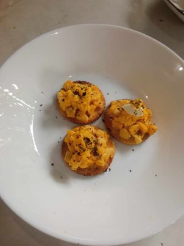
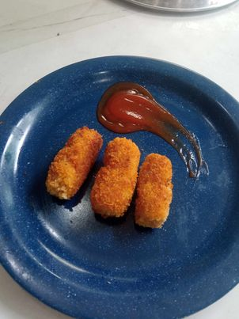
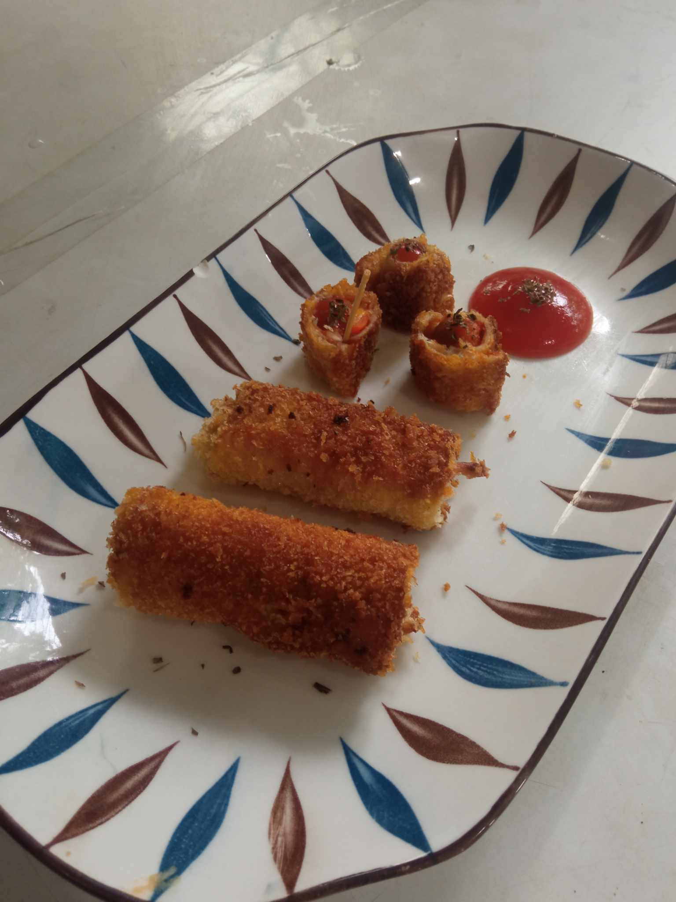

I am Venice Lozada, i'm 14 years old, and currently studying in Golden Link College. I can play some instruments like guitar, ukulele, keyboard, and drums. I like listening to alternative r&b songs, while doing some school related stuffs and others. My hobbies are drawing, playing instruments, and playing. Now you know all about me. :3
In this project, we were assigned to make 3 appetizer, which are Corn Canapé, Veggie Pin Wheels, and lasty Crispy Bread Roll.
  Our project was to make a poem, so I made a poem "hangin" or air. It tells about the situations of life and it is also a motivation or reminder for us.
Ang Hangin
O hangin, tila isang malayang ibon Lumilipad at walang patutunguhan Nagbibigay ng buhay sa bawat tao Nagdadala ng simoy at pagbabago
Ang hangin ay patuloy na nagdadala Ng ating mga pangarap at ligaya Sa iyong yakap ako ay nag-iisa Haplos sa balat, ay nagdala ng saya
Sa hangin, mga ala ala'y bumabalik Ngunit hindi na tayo makakabalik Sa bawat pag-ihip, ay may paalala Ng simula, ng pag-ibig, at pag-asa
O hangin, sa iyo'y hiling ko ay payo Sa bawat pag hinga, buhay mo'y taglay ko Nag papaalala na tayo'y malaya At ang buhay natin ay isang biyaya
IG:ldy.venice